Streifzüge durch die Grafikwelt (Teil 5)
In dieser Folge werden wir die Früchte zu ernten beginnen, deren Samen wir in der Vergangenen durch die Erklärung der Matrizen gesät haben. Anhand eines einfachen Beispiels sehen wir uns einige Transformationen auf dem Bildschirm an.
Erinnern Sie sich an die Definition einer Matrix aus der letzten Folge? Da hatten wir festgestellt, daß eine Matrix einfach eine geordnete rechteckige Darstellung von Elementen, beispielsweise von Zahlen ist. Nichts hindert uns also daran, auch die Koordinaten eines Punktes (siehe Bild 1) als eine Matrix aufzufassen.
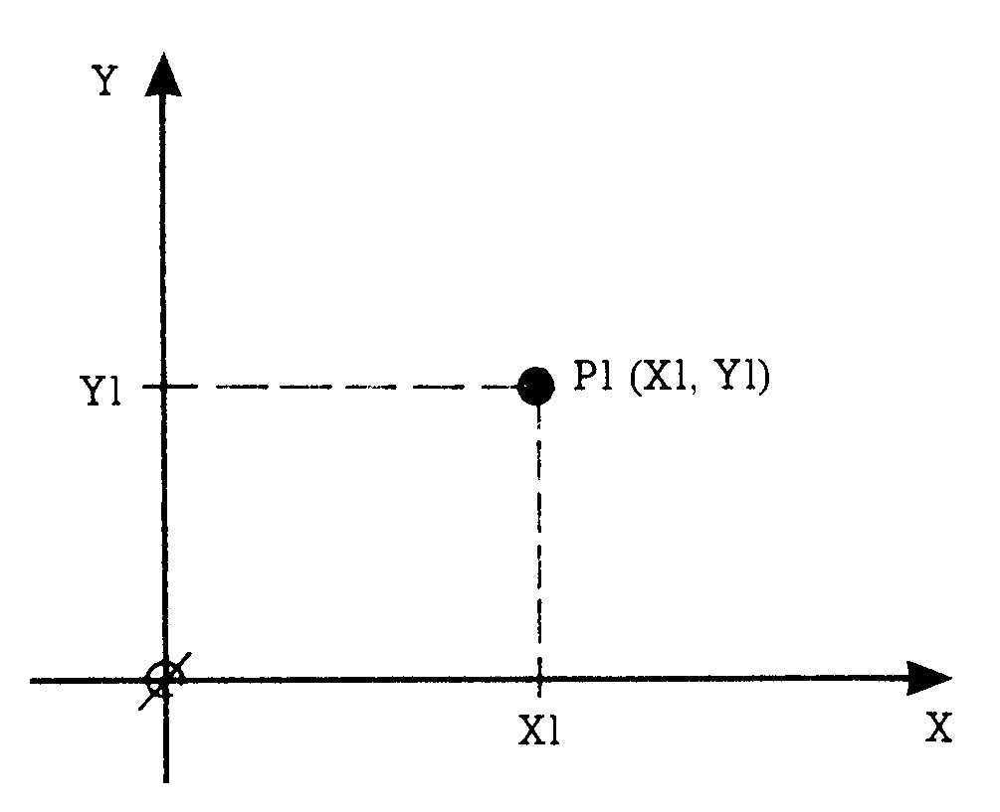
Einem Punkt P1 (X1,Y1) entspricht also eine 1,2-Matrix, nämlich
(X1 Y1)
Nun können wir ausprobieren, was geschieht, wenn wir diese kleine Matrix allerlei Rechnereien aussetzen.
Skalieren
Was passiert, wenn wir die 1,2-Matrix eines Punktes mit einer 2,2-Matrix malnehmen? Bild 2 zeigt Ihnen ein Beispiel.
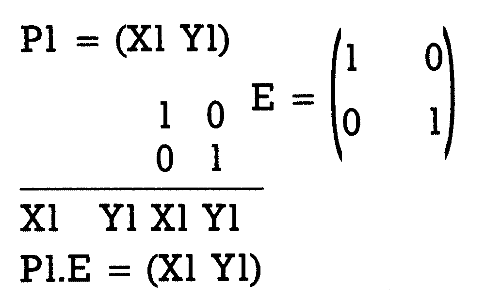
P1 ist unser Punkt, E die 2,2-Matrix. Das Ergebnis ist wieder eine 1,2-Matrix. Durch die Multiplikation ist Pl gar nicht verändert worden! Wir haben hier eine besondere Matrix gewahlt, nämlich die sogenannte Einheitsmatrix, die auch als E bezeichnet wird. Eine Einheitsmatrix erkennt man immer an zwei Kriterien: Es ist eine quadratische Matrix, also eine, bei der die Anzahl der Zeilen und Spalten gleich ist, und sie enthält auf der Diagonalen von links oben nach rechts unten nur Einsen, während alle anderen Elemente gleich Null sind.
Sehen wir uns mal eine andere 2,2-Matrix an, die wir T1 nennen. Bild 3 zeigt Ihnen, was hier die Multiplikation erzeugt.
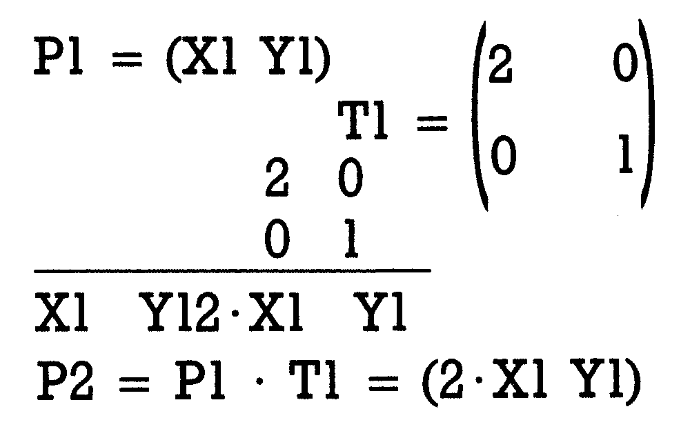
P2 — der Punkt, der sich aus der Multiplikation Pl*T1 ergibt — hat doppelt so große X-Koordinaten als P1. Setzen wir statt der 2 in T1 nun 0,5 ein, dann ergeben sich halbierte X-Werte. Probieren Sie es einmal aus!
Die 2,2-Matrix T1 ist das, was wir in den letzten Folgen angekündigt haben: eine Transformationsmatrix. Eine sehr einfache zwar, aber immerhin wissen Sie nun, wie man durch Multiplikation einer Punktmatrix mit einer Transformationsmatrix eine Transformation ausführen kann. Einund denselben Punkt P1 können wir nun als P2 in Koordinatensystemen mit gestreckter oder auch gestauchter X-Achse darstellen.
Vermutlich ahnen Sie schon, wie man dasselbe nun auch mit der Y-Achse durchführen kann. Bild 4 zeigt es Ihnen an einem Beispiel.
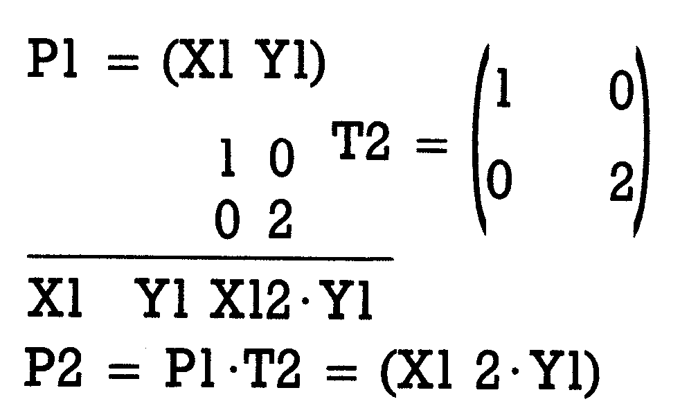
P2 = P1*T2 ergibt also die Verdoppelung der Y-Koordinate, wenn das Element in Zeile 2, Spalte 2 der Transformationsmatrix eine 2 ist. Man nennt diese Art der Transformation, die wir nun mit X und auch mit Y ausgeführt haben, eine Skalierung. Der Name rührt einfach von den Skalen her, mit denen Koordinatenkreuze unterteilt werden können. Mittels Skalierung ist schon eine große Hürde genommen, die auf dem Weg von Weltkoordinaten zu Bildschirmkoordinaten liegt. Sie erinnen sich vielleicht an die dritte Folge, wo wir am Beispiel des Architekten das Problem erläutert hatten. Wie kann er den Grundriß eines Hauses, das eine Ausdehnung von 15 mal 18 Metern hat, aufden Bildschirm unseres Computers bringen? Die Lösung bringen unsere Skalierungs-Transformationen. Wie das genau funktioniert werden wir nachher an Beispiel-Programmen herausfinden.
Zuvor wollen wir aber noch klären, was zu tun ist, wenn sowohl in X- als auch in Y-Richtung skaliert werden muß. Das wird ohnehin meistens der Fall sein. Tl hatten wir die Transformationsmatrix genannt, die in X-Richtung skalierte, T2 war die für die Y-Achse. Wir können beide Rechnungen nacheinander ausführen. Dann steht für die X-Skalierung:
P2=PI*T und für die Y-Richtung anschlie-Rend: P3 = P2*T2 Setzen wir den Ausdruck für P2 in die zweite Gleichung ein, dan ergibt sich: P3 = PI*T1*T2.
In der letzten Folge hatten wir zwar festgestellt, daß man die Reihenfolge der Faktoren bei einer Matrizenmultiplikation nicht vertauschen darf; andererseits gilt aber das sogenannte Assoziativgesetz. Man kann also folgendes tun:
A * B * C = A * (B * C) = (A * B) * C
Es spielt dabei keine Rolle, ob man zuerst Pl mit T1 malnimmt und dieses Ergebnis dann mal T2 oder ob man zuerst T1 mal T2 rechnet und das Ergebnis dann als 2. Faktor bei der Multiplikation mit P1 verwendet. Das erlaubt uns die Berechnung einer allgemeinen Skalierungsmatrix in der sowohl die X- als auch die Y-Richtung gleichzeitig erfaßt werden. Bild 5 zeigt uns an unseren obigen Beispielen, wie eine solche Skalierungsmatrix durch Bilden von T1*T2 entsteht.
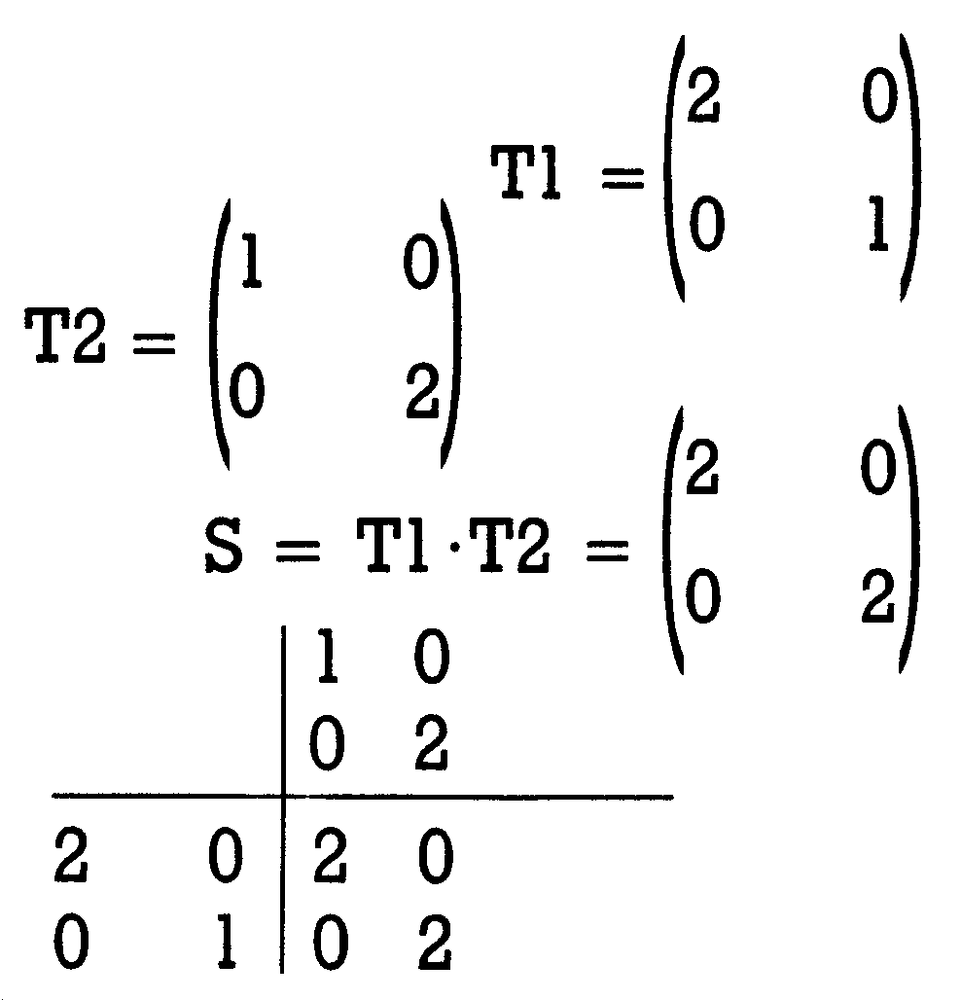
Halten wir nun fest, wie eine allgemeine Skalierungsmatrix aussehen muß, die wir für jeden vorkommenden Fall anwenden können (siehe Bild 6).
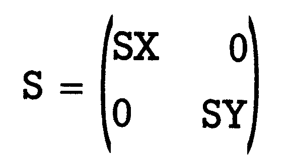
Dabei ist SX der Skalierungsfaktor der X-Achse und SY derin Y-Richtung. Damit sollen die Skalierungen erst einmal beiseitegelegt werden. Behalten Sie die Matrix Sim Gedächtnis. Wir werden sie später wieder hervorholen.
Rotation
Außer der Skalierung sind es noch zwei Veränderungen von grafischen Abbildungen, die uns interessieren werden: die Rotation und die Translation. Unter Translation versteht man einfach die Verschiebung eines Koordinatensystems, unter Rotation aber die Drehung. Zur Translation kommen wir gleich. Beginnen wir zunächst einmal mit der Rotation.
Ein Hinweis sei all jenen gegeben, die nur noch den Schatten einer Erinnerung (oder auch diesen nicht mehr) davon haben, was eigentlich Sinus und Cosinus bedeuten. Es gibt drei Wege dieses Kapitel über Rotationen anzugehen: ]. Sie beherrschen die Winkelfunktionen. Dann lesen Sie einfach weiter. 2. Sie erinnern sich noch schwach, wollen aber gerne wissen, wie es funktioniert. Dann lesen Sie zuerst den Kasten, in dem Sinus und Cosinus erklärt werden und danach hier weiter. 3. Sie wissen nichts mehr von Winkelfunktionen und es interessiert Sie auch nicht. Dann geben Sie sich einfach mit deram Ende dieses Abschnittes gezeigten Rotationsmatrix zufrieden. Begreifen Sie in diesem Fall einfach Sinus und Cosinus als die beiden Basic-Funktionen SIN(...) und COS...) unseres Computers.
Sehen wir uns zunächst einmal an, was bei einer Rotation geschieht. Bild 7 zeigt die Verhältnisse für den Fall einer Rotation um den Ursprungspunkt (also den Punkt 0,0).
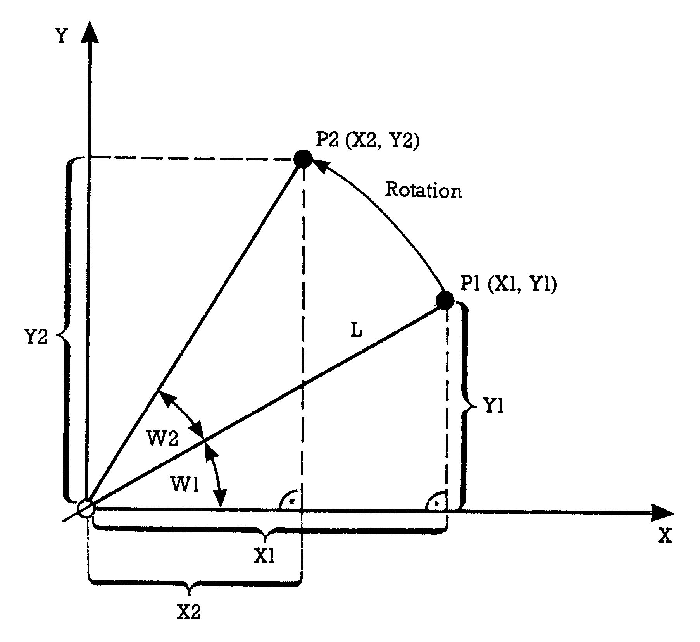
Ein Punkt P1 mit den Koordinaten X1 und Y1 ist durch Rotation um den Winkel w2 überführt worden in einen Punkt P2 (Koordinaten X2 und Y2). Uns interessiert, wie man die neuen Koordinaten X2 und Y2 aus den alten berechnen kann. Die Entfernung L des Punktes vom Koordinaten-Ursprung 0ist konstant geblieben. Vor der Rotation kann man für Sinus und Cosinus schreiben:
SIN(w)) = YV/L und COS(w)) = XUVL
Daraus folgt durch Umstellen der Gleichungen:
Y1 = L*#SINw] und Xl = L*COS(w)) Das behalten wir erst einmal im Gedächtnis und sehen uns nun die Verhältnisse nach der Rotation an. Aus wl ist nun die Winkelsumme wl+w2 geworden. Für den Sinus und den Cosinus kann man nun schreiben: SIN(wl+w2) = Y2/L und COS (wl+w2) = X2/L
Nach dem Umstellen ergibt sich hier ähnlich wie vorhin:
Y2 = L*SIN(wl+w2) und X2 = L*COS(wl + w2)
Kluge Mathematiker haben sich den Kopf zerbrochen und schließlich festgestellt, daß man für den Sinus einer Winkelsumme auch schreiben kann: SIN(wl+w2) = COS(w2)*SIN (w]) + SIN(w2)*COS(w])
Analog dazu fanden sie für den Cosinus:
COS(w1+w2) = COS(w2)*COS (w)) — SIN(w2)*SIN(w))
Diese beiden Beziehungen setzen wir in die von uns gefundenen für Y2 und X2 ein und erhalten auf diese Weise:
Y2 = L*COS(w2)*SINWw] + SIN(w2)*COS(w]))
und
x%2 = L*(COS(W2)COSWw)) — SIN(w2)*SIN(w]))
Das Auflösen der äußeren Klammer liefert uns:
Y2 = COS(w2)*SIN(w)*L + SIN(w2)*COS(w))*L
und
x%2 = COS(w2)*COS(wl)*L — SIN(w2)*SIN(w])*L
Nun holen wir uns wieder die vorhin im Gedächtnis behaltenen Gleichungen für Yl und X1 hervor. Wenn Sie genau hinsehen stellen Sie fest, daß wir diese Beziehungen jeweils zweimal pro Gleichung enthalten finden (beispielsweise in der Gleichung für Y2 am Ende des ersten Summanden. Hier steht SIN(wl)*L, was ja Yl entspricht). Wir verwenden also diese Einsetzmethode und gelangen so zu:
Y2 = COS(w2)*Yl + SIN(w2)*X1 und xX2 = COS(w2)*X1 — SIN(w2)*Y1
Damit haben wir nun zwei Gleichungen, die es uns erlauben, für jeden Punkt Pl mit den Koordinaten Xl und Yl nach einer Drehung um den Winkel w2 die neuen Koordinaten X2 und Y2 zu berechnen. Nun können Sie das mit den Kenntnissen über die Matrizenmultiplikation einmal nachprüfen: Dasselbe Ergebnis folgt nämlich auch aus der Multiplikation der Punktmatrix (X1 Yl) mit einer Transformationsmatrix R (also Pl*R). Sehen Sie dazu Bild 8.
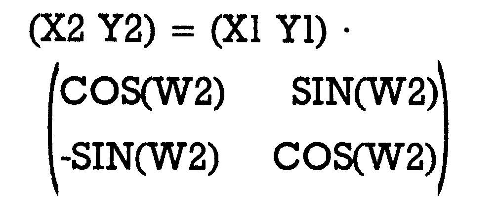
R ist die sogenannte Rotationsmatrix, die wir uns gut merken sollten (siehe Bild 9).
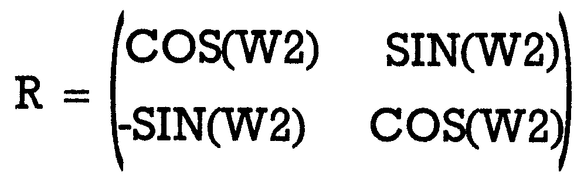
R in Bild 9 ist die allgemeine Rotationsmatrix, die in dieser Form für jeden Winkel w2 angewendet werden kann. w2 wird positiv gerechnet bei Drehungen gegen den Uhrzeigersinn, negativ aber beisolchen im Uhrzeigersinn. Handelt es sich also um eine negative Rotation, dann erhält man für R einen Ausdruck, wie ihn Bild 10 zeigt.
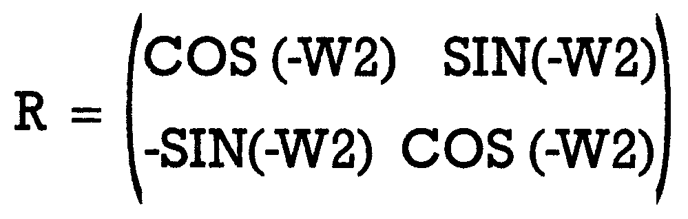
Man kann sich in einem solchen Fall wieder einige mathematische Erkenntnisse zunutze machen, die Winkelfunktionen negativer Winkel betreffen. Es gilt nämlich:
COS(—w2) = COS(w2) und
SIN(w2) = —SIN(w2)
Damit vermeiden wir negative Winkel. Die veränderte Rotationsmatrix für Drehungen im Uhrzeigersinn zeigt Ihnen dann Bild 11.
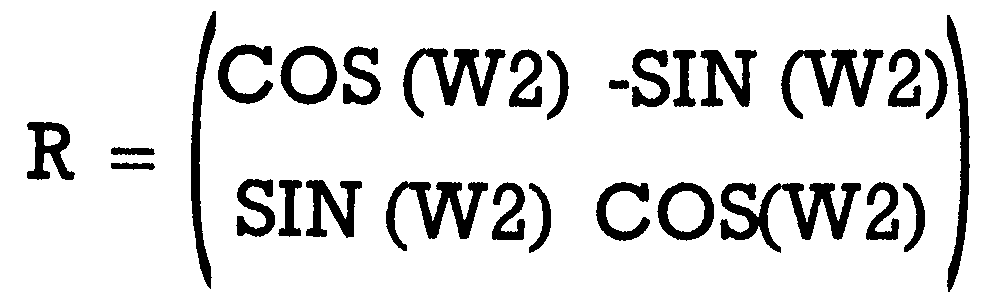
Jetzt kennen wir die Matrizen zur Skalierung und zur Rotation. Die dritte Manipulation von Punkten wäre die Verschiebung oder Translation, der wir uns nun zuwenden.
Translation
Damit Sie sich die Unterschiede aller drei Operationen, die wir behandeln, auch vorstellen können, sind sie in Bild 12 einmal aufgeführt.
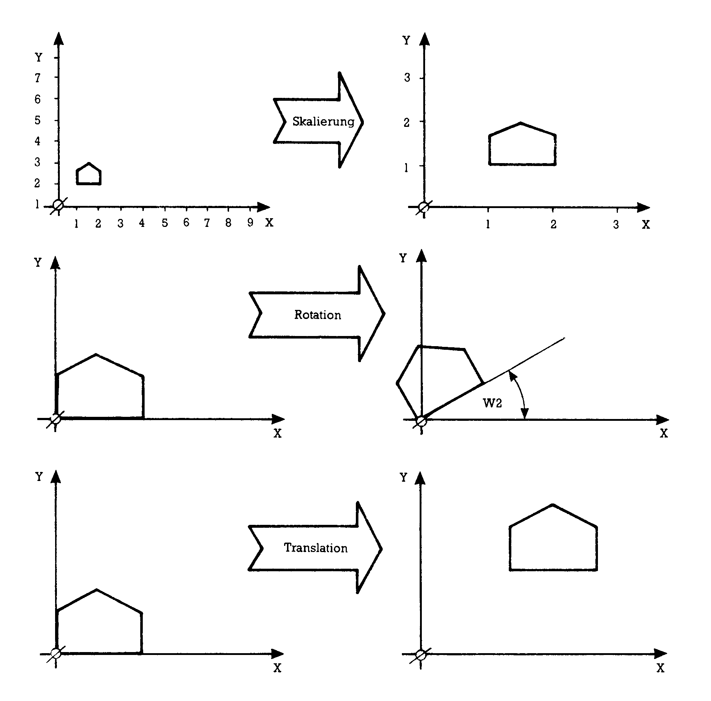
Um eine Verschiebung in der Fläche durch Transformationen ausdrücken zu können, braucht man anstelle der bislang verwendeten 2,2-Matrizen eine 3,3-Matrix. Weil wir später — und da liegt überhaupt der Vorteil dieser Methode — auch Kombinationen dieser Transformationen (beispielsweise kann man dann eine Drehung, eine Skalierung und eine Translation mittels einer einzigen Matrix ausführen) durchführen werden, ist es sinnvoll, auch die bisher gefundenen Matrizen S und R als 3,3-Matrix zu schreiben. Ebenso werden die Punkte nun durch drei Angaben statt wie bisher nur durch zwei (nämlich X1, Yl) beschrieben. Aber immer der Reihe nach.
Für die Punkte erfindet man noch einen Dummywert (also einen Wert, der lediglich für die Bequemlichkeit der Rechnung geschaffen wird, der aber keine konkrete Bedeutung hat). Wir nennen ihn w. Unser Punkt Pl: (X1Y)) heißt nun Pl: XPw Yl*w w)
Idealerweise hat w einfach den Wert 1. Sie werden sich vielleicht daran erinnern, daß man bei der Matrizenmultiplikation auf die Anzahl der Zeilen und Spalten achten mußte. Das allein ist der Grund, der dieses w erforderlich macht. Wie sehen nunSundRals3,3-Matrizen aus? Man kann eine Matrix erweitern ohne ihren Wert zu verändern, indem man eine Zeile und eine Spalte hinzufügt, die nur Nullen enthalten. In der Diagonalen kommt dann noch eine 1 dazu. Bild 13 zeigt Ihnen das an unserer Skalierungsmatrix.
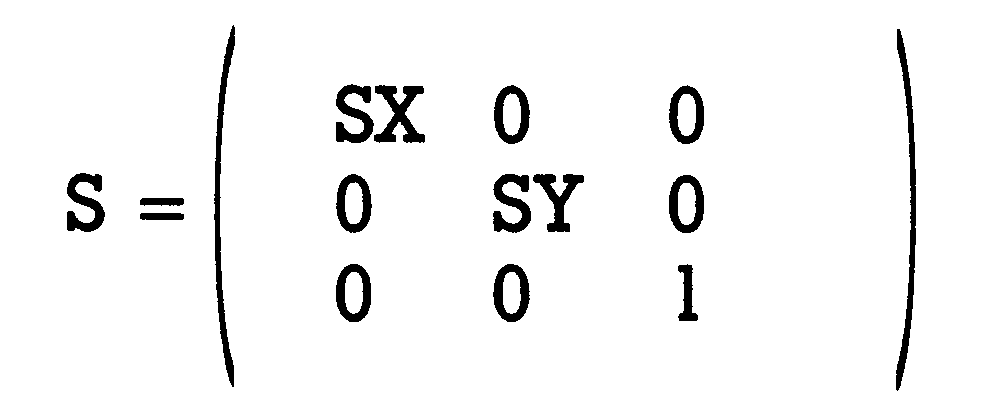
Bild 14 soll Ihnen die Vorgehensweise zeigen, mit der nun gerechnet wird.
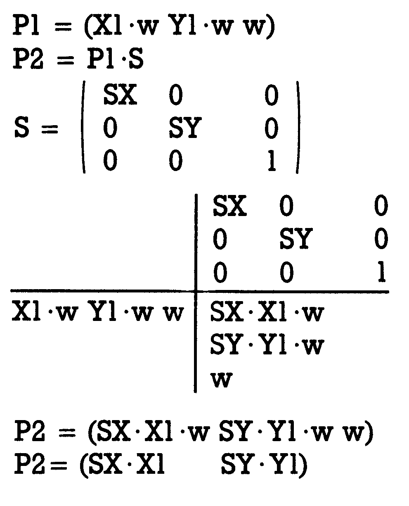
Das korrekte Ergebnis erhält man einfach durch Weglassen von w. Auch die Rotationsmatrix wird erweitert und lautet nun so, wie es in Bild 15 gezeigt wird.
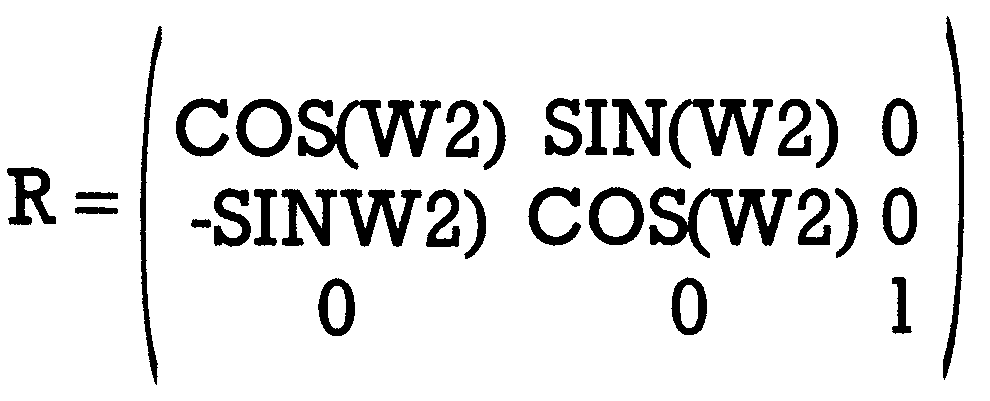
Die Vorgehensweise beim Rechnen erfolgt genauso, wie wir das schon bei der erweiterten Skalierungsmatrix gesehen hatten. Damit sind die Anpassungen erledigt. Sehen wir uns nun die Ursache für diese Veränderungen an: Die Translationsmatrix.
In Bild 16 finden Sie die allgemeine Form dieser Matrix.
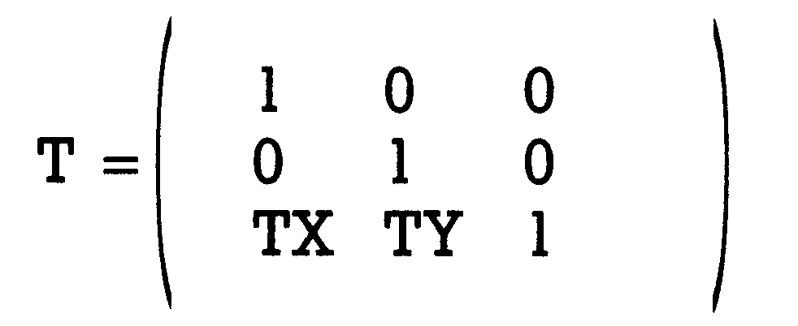
TX ist die Verschiebung in X-, TY diein die Y-Richtung. Die Anwendung aufeinen Punkt Pl (X1, Y]) als Operation
P2=PI*T
zeigt Ihnen Bild 17.
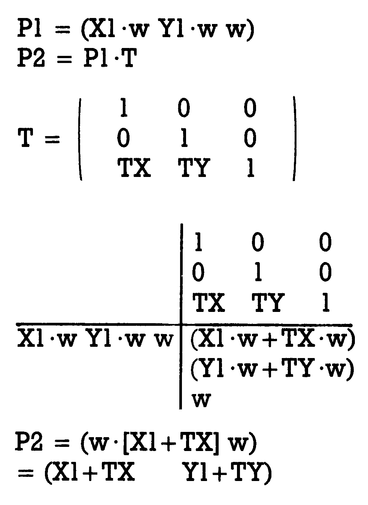
Die normalen Koordinaten ergeben sich wieder durch einfaches Weglassen von w. Wenn Sie sich das Ergebnis genau ansehen, werden Sie sicher fragen, weshalb das alles auf so komplizierte Weise erfolgen muß. Daß manTX zur X-Koordinate und TY zur Y-Koordinate zu addieren hat, sei vorher auch schon klar gewesen. Damit haben Sie natürlich recht. Jede einzelne dieser Matrizen, S, RoderT für sich allein genommen (R ausgenommen) kann man eigentlich ebensogut durch normale Rechenvorgänge ersetzen, die keinerlei Matrizen erfordern. Der Vorteil dieser Art der Transformation zeigt sich erst, wenn man bedenkt, daß sie sehr computergerecht abläuft. Man kann im Prinzip ein- und dasselbe Programm für alle Operationen verwenden. Lediglich die Elemente der Matrix verändern sich. In noch viel stärkerem Maß aber erfahren wir die Vorteile, wenn mehrere Transformationen zusammenfallen. Auch dann genügt immer noch eine einzige Matrix. Das gleiche Programm kann auch hier verwendet werden. Wieder sind nur die Elemente der Matrix andere. Schließlich sollten Sie noch bedenken, daß wir uns immer noch mit den einfachsten grafischen Objekten (nämlich den Punkten) im einfachsten Koordinatensystem (nämlich dem ebenen kartesischen System) befassen. Wenn wir späterin die höheren Dimensionen aufsteigen, werden die Rechnungen ohne Matrizen reichlich verwirrend.
Ein Programm zur Transformation
Bevor wir zu den zusammengesetzten — und damit auch interessanteren — Transformationen kommen, werden wir gemeinsam ein Programm erarbeiten, das drei Matrizen verwendet. Damit Sie möglichst unabhängig von der Art des Computersystems bleiben, verwende ich wieder denschon vorgestellten Grafikstandard. Zur Erinnerung: Wenn Sie das Programm direkt abtippen und starten, dann wird eine Fehlermeldung erzeugt, denn die Befehle zur Grafik müssen erst noch von Ihnen übersetzt werden. Dazu sind in der untenstehenden Tabelle die Übersetzungen für folgende Systeme angegeben:
1) C 64 mit HIRES-3
2) C 64 oder C 128 mit Plotter 1520
3) C 128 Basic 7.0
Falls Sie ein anderes System verwenden, dann brauchen Sie sich nur die Übersetzungen überlegen und können dann unsere Programme benutzen.
Doch nun soll es losgehen: Wir versetzen uns in die Lage eines Architekten, der die schematische Vorderansicht eines Hauses auf dem Bildschirm zeigen möchte. Bild 18 zeigt Ihnen das Haus und auch gleich ein Weltkoordinatensystem, das es uns gestattet, die fünf Eckpunkte zu bezeichnen.
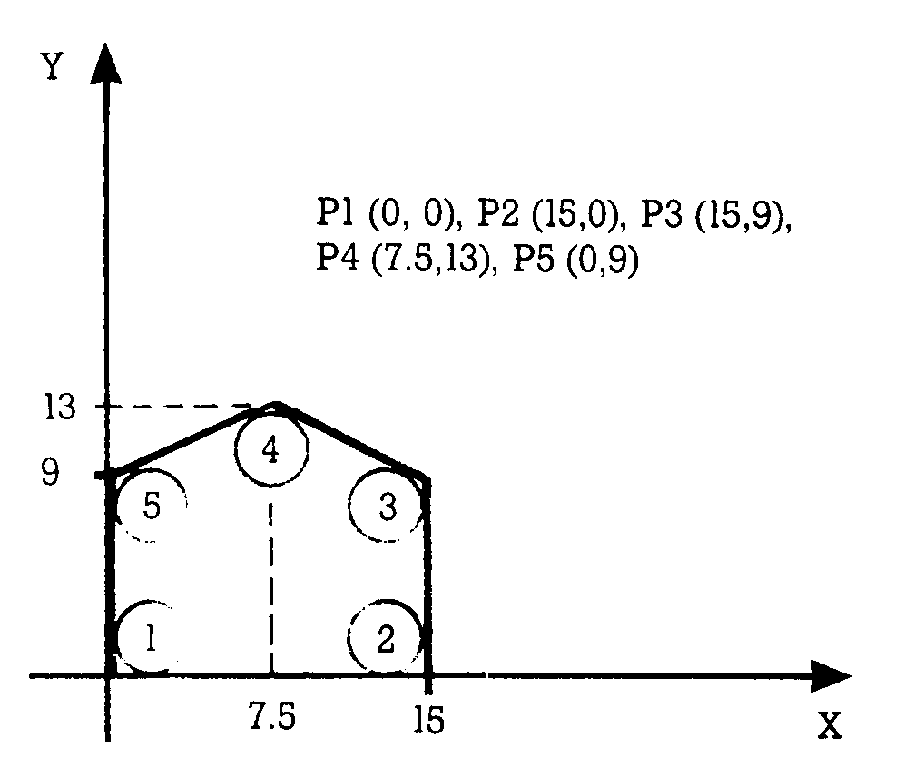
Die Darstellung des Hauses ist einfach: Wir brauchen nur die fünf Ecken miteinander verbinden (und auch die fünfte Ecke mit der ersten). Problematisch aber wird es, wenn wir an die Umrechnung der Maße denken: Ein Architekt muß den Maßstab mit angeben, der seiner Zeichnung entspricht. Welches Ausgabegerät er auch verwendet, er muß genau wissen, wievielen Meterninder Natur ein Zentimeter seiner Zeichnung entspricht. Das sollten wir zumindest im Kopf behalten, wenn wir uns die Sache hier stark vereinfachen, indem wir zunächst lediglich Bildpunkt = Meter annehmen. 320 Bildpunkte in X-Richtung entsprechen dann 320 Meternin der Realität. Der Vorteil dieser Annahme ist, daß wir uns damit für den ersten Überblick jegliche Umrechnung ersparen. Das Programm in Listing 1 zeichnet unser Haus.
Wie Sie sicherlich beim Vergleich von TRANS 0 (64HIRES) mit der Übersetzungstabelle bemerkt haben, liegt hier eine Abweichung vor. Das rührt daher, daß die HIRES-Befehle der Tabelle schon mit einem transformierten Koordinatensystem zusammenhängen (ähnliches gilt auch für die C 128-Befehle der Tabelle, die sich immer auf ein Unterprogramm »I'ransformation« beziehen). Wir wollen aber hier diese Transformationen und ihre Wirkungen untersuchen. Deshalb verwenden wir die Befehle, die sich aufein nicht transformiertes System beziehen. Was durch TRANS 0 auf dem Bildschirm herauskommt, zeigt Ihnen Bild 19. In der nächsten Folge werden wir noch tiefer in die Transformationen eindringen, und auch Rotationen untersuchen.
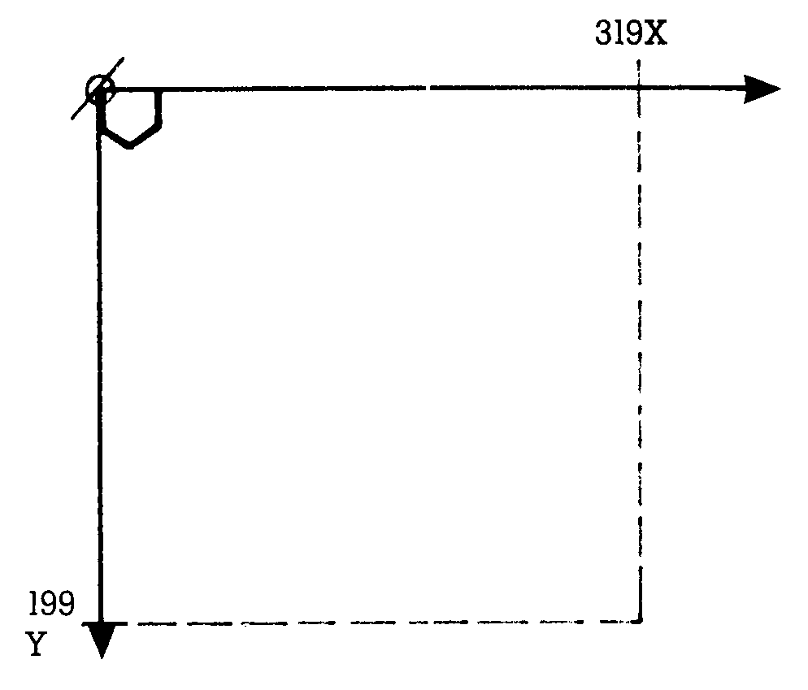